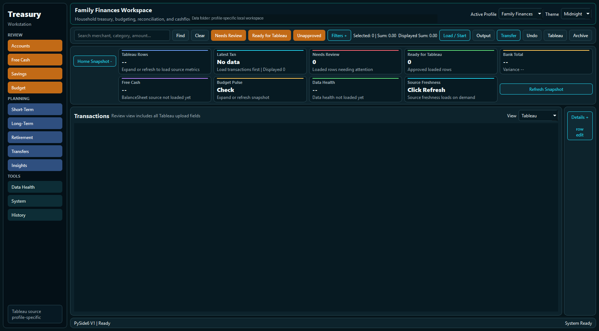
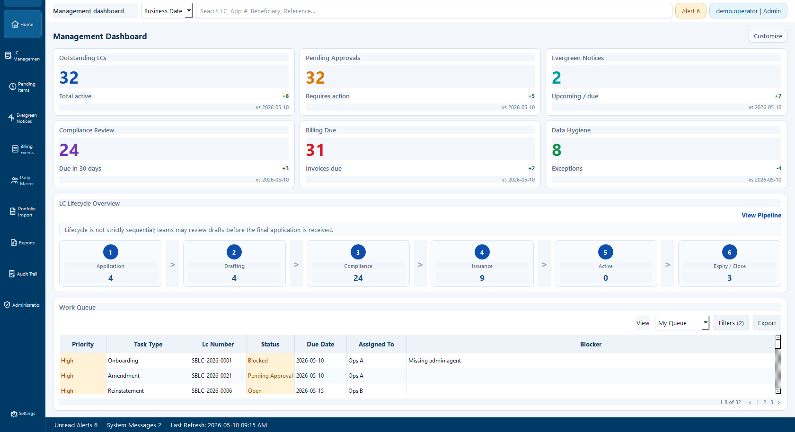
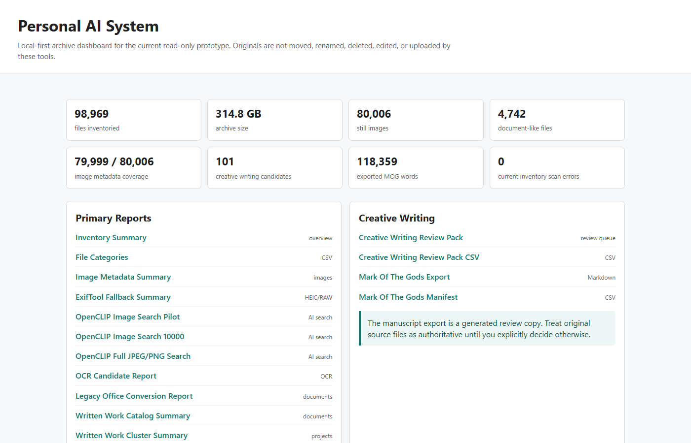

Treasury · Banking · Automation
Marcos M. Conde
Turns manual treasury and banking workflows into auditable Python systems.
Treasury operations · Finance automation · Risk & controls
SBLC Ops
Local AI
Selected projects
Working tools built from operational experience.

Treasury Workstation
Multi-account cashflow review and Tableau-ready exports in a single desktop app.
Python
PySide6
pandas
View case study

SBLC System
Prototype
Document review, approval queues, and traceable evidence for SBLC operations.
SQLite
Automation
OCR
View case study

Personal AI System
Private document search, OCR, and review queues with local processing.
Local AI
Privacy
Search
View case study
Operations experience. Practical systems.
Treasury & cash management
Experience across cash management, account administration, reconciliation, and reporting.
Letters of credit
Operational experience across document review, evergreen processing, billing, and controls.
Risk & controls
Review controls, traceable approvals, and clear documentation built into operational workflows.